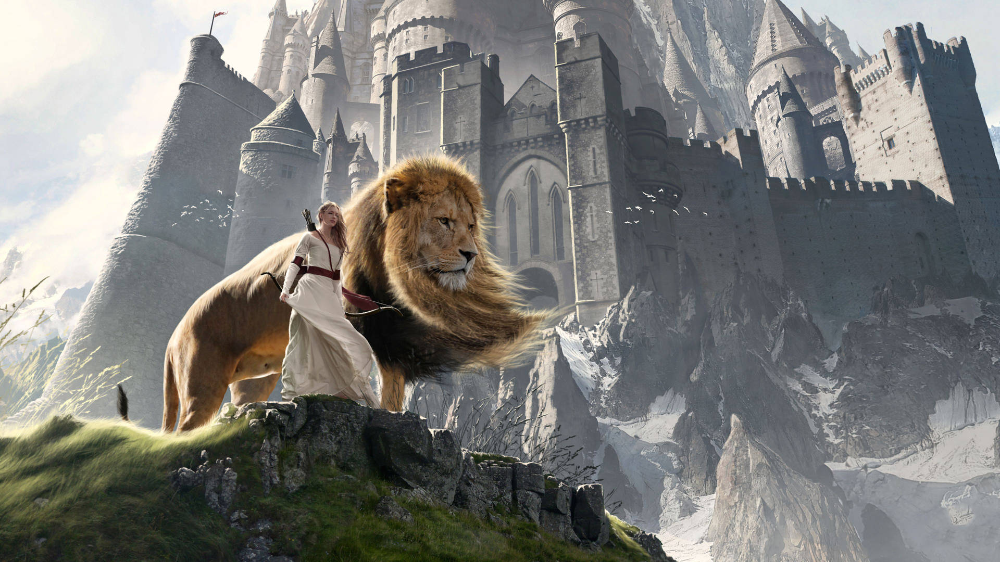
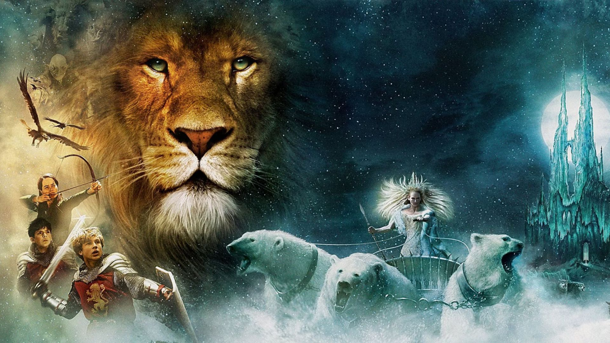
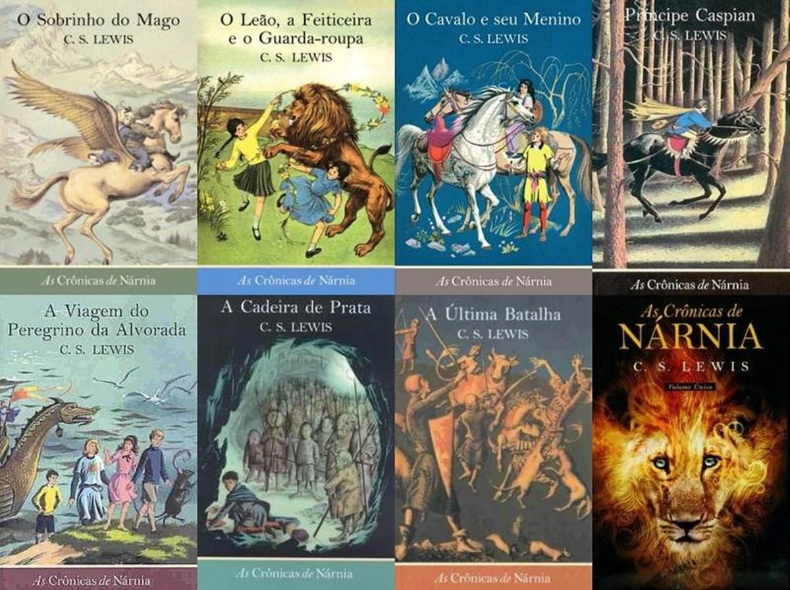

O Universo de Nárnia
As Crônicas de Nárnia é uma série de livros de fantasia escrita pelo autor britânico C. S. Lewis. As histórias apresentam um mundo mágico habitado por humanos, animais falantes e diversas criaturas fantásticas.

Ao longo das aventuras, os personagens descobrem novos lugares, enfrentam conflitos e participam de acontecimentos que influenciam o destino do reino. Nárnia não é apenas um cenário para as aventuras: é um universo com sua própria história, seus costumes e suas regras.
Para conhecer mais sobre o autor e suas obras, acesse a página oficial dedicada a C. S. Lewis.
A Cultura por Trás da Ficção
Em uma obra de ficção, criar personagens interessantes e uma trama envolvente é importante, mas construir uma cultura para o mundo apresentado também faz diferença. A história de um reino se torna mais convincente quando existem tradições, crenças, valores, conflitos e relações entre seus habitantes.
Em Nárnia, a presença de diferentes povos e criaturas ajuda a transmitir a sensação de que o mundo continua existindo mesmo quando os protagonistas não estão presentes. Cada personagem pertence a uma realidade maior, formada por acontecimentos anteriores e por diferentes maneiras de compreender o mundo.
Uma cultura bem desenvolvida também permite que o autor crie conflitos que vão além de uma simples batalha. Diferenças de valores, disputas por poder, alianças e tradições podem influenciar as decisões dos personagens e dar mais profundidade à narrativa.
Elementos que enriquecem o universo de Nárnia
- Criaturas fantásticas e animais falantes
- Tradições e histórias antigas
- Conflitos entre diferentes povos
- Reinos, alianças e disputas por poder

Os Livros da Saga
As Crônicas de Nárnia é composta por sete livros que exploram diferentes momentos da história desse universo fantástico. Ao longo das obras, C. S. Lewis apresenta aventuras, personagens marcantes e conflitos que envolvem coragem, amizade, escolhas e a luta entre o bem e o mal. Embora cada livro tenha sua própria narrativa, juntos eles contribuem para construir um mundo rico em história, simbolismo e imaginação.
Os Sete Livros de Nárnia
- O Sobrinho do Mago
- O Leão, a Feiticeira e o Guarda-Roupa
- O Cavalo e Seu Menino
- Príncipe Caspian
- A Viagem do Peregrino da Alvorada
- A Cadeira de Prata
- A Última Batalha
